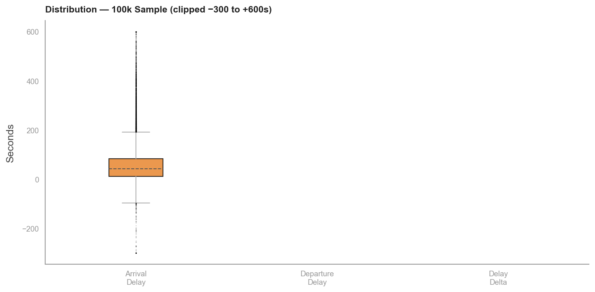
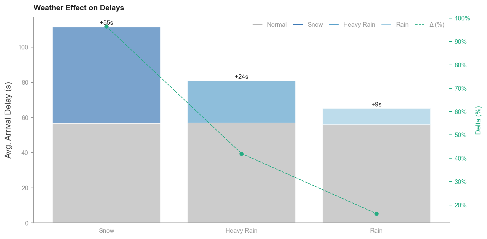
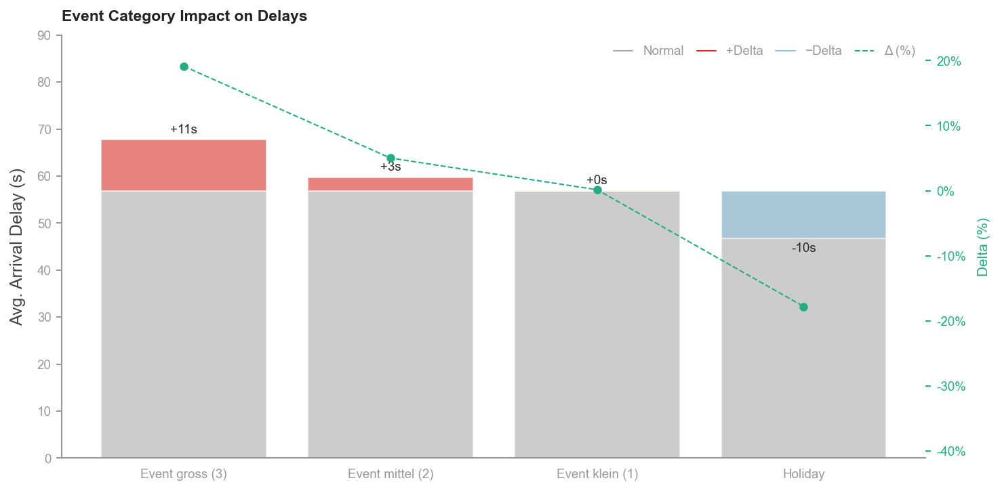
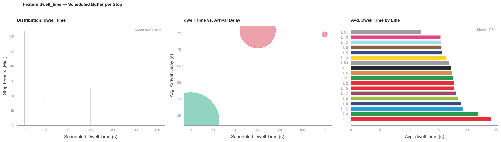
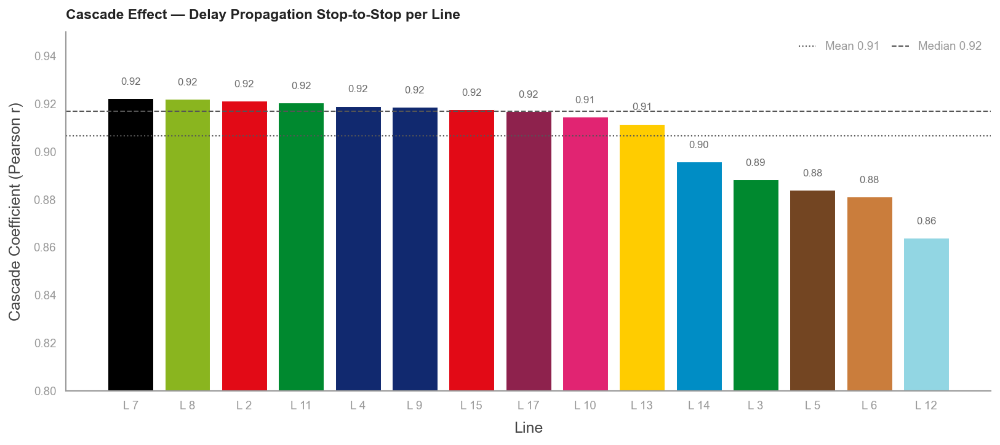

Die Verkehrsbetriebe Zürich verfehlen die eigene OTP-Zielvorgabe — seit drei Jahren stabil
OTP = On-Time Performance: Anteil der Fahrten mit Ankunftsverspätung ≤ 120 s · VBZ-Zielvorgabe: 95% bis 2028 · Benchmark: Berlin BVG 87.1% (2023)Die VBZ betreiben 16 Tramlinien mit täglich rund 860'000 Fahrgästen. Eine Analyse von 93.9 Millionen Halt-Ereignissen über drei Betriebsjahre zeigt: Die OTP pendelt konstant bei 87% — 8 Prozentpunkte unter der selbst gesetzten Zielvorgabe. Es gibt keinen Trend zur Verbesserung; die Lücke ist strukturell.

(bereinigt)
verspätung
akkumulieren Delay
(ab Jul 2024)
Die Zielvariable: Ankunftsverspätung als kontinuierliches Maß — nicht OTP allein
F-TARGET-01/02/03 · arrival_delay = Ist-Ankunft minus Plan-Ankunft in Sekunden · lf_clean: ~85 Mio. bereinigte ZeilenOTP ist ein binäres Maß und verbirgt, was wirklich passiert. Die Rohdaten zeigen eine rechtsschiefe Verteilung mit Median 42 s und Mittelwert 56.3 s — Extremlagen werden durch OTP allein nicht sichtbar. Entscheidend ist das delay_delta: die Differenz zwischen Ankunfts- und Abfahrtsverspätung. An 71.5% aller Halte ist dieses positiv — das Netz akkumuliert, statt sich zu erholen.

Rechtsschiefe Verteilung: Median 42 s, Mittelwert 56.3 s — lineare Modelle unterschätzen Extremwerte systematisch.
71.5% aller Halte mit positivem delay_delta — kein Fahrplanpuffer; Trams akkumulieren an über zwei Dritteln aller Stopps.
delay_delta bimodal: Recovery-Cluster (≈ −45 s) an Endstationen und Abzweigungen — Akkumulations-Cluster (≈ +15 s) im regulären Streckenbetrieb.
Moderater Aufwärtstrend: delay_delta +4.6 s (2023) → +5.1 s (2025) — das Netz verschlechtert sich langsam, ohne Gegenmaßnahmen.
Räumliche Analyse: Verspätungshotspots konzentrieren sich auf periphere Aussenkorridore
F-SPAT-01/03/07 · F-NET-05 · Haltestellen-Aggregation über 85 Mio. Ereignisse · 190 Haltestellen · 16 LinienDie räumliche Auswertung widerlegt die naheliegende Hypothese, dass hohe Liniendichte mit hoher Verspätung korreliert. Zwischen den 10 dichtesten Knotenpunkten und den 10 Hotspot-Haltestellen gibt es null Überschneidungen. Zentrale Haltestellen wie Paradeplatz (14 Linien, 48.2 s) und Haldenegg (15 Linien, 44.5 s) liegen unter dem Netzschnitt.

| Haltestelle | Ø Delay | Stadtkreis |
|---|---|---|
| Friedhof Enzenbühl | 93.8 s | K7 — peripher |
| Balgrist | 85.2 s | K7/8 — peripher |
| Leutschenbach | 82.7 s | K11 — peripher |
| Paradeplatz | 48.2 s | K1 — zentral ✓ |
| Haldenegg | 44.5 s | K6 — zentral ✓ |
Stadtkreis 5 (Innenstadt): 49.9 s, OTP 89% — bester Kreis.
Linie 11: 68.7 s, OTP 82% — kritischste Hauptlinie.
Temporale Analyse: Kein Morgenrush — die dominante Verspätungsspitze liegt bei 21 Uhr
F-TEMP-01/02/05/06 · Stunden-, Wochentag-, Monats- und Saisonanalyse · 3 vollständige BetriebsjahreDer verbreitete Erklärungsreflex, Verspätungen mit dem Morgenberufsverkehr zu assoziieren, wird durch die Daten nicht gestützt. Der Delay um 7 Uhr (48.9 s) liegt unter dem Netzschnitt. Die eigentliche Verspätungsspitze tritt um 21 Uhr auf — getrieben durch Abreisewellen nach Veranstaltungen. Kontraintuitiv: Winter ist die beste Jahreszeit, weil der Rückgang des motorisierten Individualverkehrs den Schneeeffekt überwiegt.

Peak 21h: 67.9 s (Abreisewelle); 17h: 65.2 s (Feierabend). Morgen 7h: 48.9 s — unter Netzschnitt.
Donnerstag schlechtester Wochentag (60.4 s, P95 = 194 s). Sonntag bester Tag (48.4 s).
November schlimmster Monat: 2023 = 67.9 s, 2024 = 72.9 s — jeweils Jahreshöchstwert.
Winter beste Jahreszeit (51.7 s, OTP 88.9%). Herbst schlechteste (61.2 s, OTP 85.2%). MIV-Reduktion überwiegt Schneelast.
Meteorologie: Schnee ist der stärkste messbare Einzeleinflussfaktor — geografisch klar von Regen trennbar
F-WEAT-01/07 · Korrelationsanalyse auf bereinigtem Datensatz · Open-Meteo Stundenwerte 2023–2025Schnee und Regen haben nicht nur unterschiedlich starke, sondern auch räumlich verschiedene Auswirkungen auf das Netz. Schnee trifft die Höhenlagen — Stadtkreise 10, 4 und 12. Regen trifft die Flusstäler — Stadtkreis 5. Linie 17 reagiert stark auf Regen (+41.2 s), kaum auf Schnee; Linie 9 umgekehrt (+75.9 s bei Schnee). Diese geografische Trennbarkeit erlaubt differenzierte Präventivmaßnahmen.

Schnee: +54.0 s Delay, OTP −10.9 pp — stärkster Einzeleinflussfaktor im gesamten Datensatz.
Starkregen: +23.3 s. Dosis-Wirkungs-Effekt messbar: ab 5 mm/h signifikanter Anstieg.
Geografische Trennbarkeit: L17 bei Regen +41.2 s, L9 bei Schnee +75.9 s — linienbezogene Risikokarten möglich.
Hitze (>20°C): +2.0 s — messbarer aber operativ vernachlässigbarer Effekt.
Event-Analyse: Fachmessen belasten das Netz stärker als Grosskonzerte — Feiertage sind die betrieblich besten Tage
F-EVNT-01/02 · Ereignisklassifikation nach Typ, Grösse und Tageszeit · ZH-Eventdaten 2023–2025Die intuitiv naheliegenden Grosskategorien — Konzerte, Sportevents — erweisen sich in der Analyse als weniger kritisch als erwartet. Fachmessen sind die belastendste Event-Kategorie, weil sie Tagesbesucher mit dem regulären Abendverkehr überlagern. Feiertage sind die betrieblich besten Tage im Jahr: Der Rückgang des motorisierten Individualverkehrs übertrifft jeden eventuellen Event-Effekt.

Feiertage: −9.9 s gegenüber Normaltag, OTP 90.6% — bester Tag-Typ im gesamten Datensatz.
Fachmessen: 66.0 s, OTP 84% — schlechteste Event-Kategorie. Schlechtester Einzeltag: Berufsmesse 21.11.2024 (192.5 s, OTP 54.5%).
Grosse Events: +10.5 s — primär Abend-Phänomen (18–22h). Taylor Swift: 75.4 s — deutlich weniger als die schlechteste Berufsmesse.
Interaktion Event × Stunde: Event-Effekte vor 17h statistisch nicht nachweisbar — Überlagerung ausschliesslich im Abendverkehr.
Strukturelle Ursache: 71.3% aller Halte ohne Verweilzeitpuffer — der Fahrplan toleriert keine Abweichung
F-TARGET-04 · F-SPAT-08 · F-NET-07 · Verweilzeit- und Kaskadenanalyse · 85 Mio. bereinigte EreignisseDer Fahrplan der VBZ ist auf reibungslosen Betrieb unter Idealbedingungen ausgelegt. An 71.3% aller Haltestellen ist keine Verweilzeit eingeplant — jede Abweichung vom Sollablauf schlägt direkt als Verspätung durch und pflanzt sich entlang der Linie fort. Der Kaskadeneffekt ist auf allen 16 Tramlinien mit Pearson r ≥ 0.85 zwischen aufeinanderfolgenden Halts nachweisbar.

71.3% aller dwell_time = 0 s — kein struktureller Erholungsmechanismus im regulären Fahrplandesign.
Kaskadeneffekt: Pearson r ≥ 0.85 zwischen Delay an Halt N und Halt N+1 — auf allen 16 Linien ohne Ausnahme.
Grösster Fahrplanwechsel in VBZ-Geschichte (Dez 2023): netzweit +0.5 s — im Delay-Signal statistisch unsichtbar.
Netzausbau 2023 zielte auf K3 und K8 — Problemkreise K11 (68.3 s) und K12 (66.3 s) erhielten keine Investitionen.
Der Kaskadeneffekt im Streckenprofil: Verspätung wächst systematisch von der ersten bis zur letzten Haltestelle
F-NET-07 · F-SPAT-04/05 · Streckenprofil-Analyse nach stop_sequence · Linie 11 als Worst CaseDie Visualisierung des Delay-Profils entlang der Strecke macht den Mechanismus unmittelbar sichtbar: Ohne Puffer pflanzt sich jede entstandene Verspätung über den gesamten weiteren Streckenverlauf fort. Linie 11 ist das extremste Beispiel im Netz — die Akkumulation beginnt ab der zweiten Haltestelle und erreicht am Endpunkt das Maximum. Das Modell (MAE 18.56 s) hat genau diesen Mechanismus als stärkstes Signal identifiziert.

Halt N → N+1
Kaskadeneffekt
Stärkste Akkumulation im gesamten Netz.
Kein einziger Puffer auf der gesamten Strecke.
prev_trip_delay als Feature (Kaskadenindikator aus F-NET-07) reduziert den Test-MAE von 45.7 s auf 18.56 s.
Prädiktive Modellierung bestätigt die Strukturhypothese: Verspätungen sind mit 18.56 s Genauigkeit vorhersagbar
LightGBM v2 · 34 Features · 41.2 Mio. Trainingszeilen · Test auf vollständigem Jahr 2025 (nie gesehene Daten)Die Vorhersagbarkeit mit MAE 18.56 s ist nicht primär ein technischer Erfolg, sondern ein analytischer Befund: Zufällige Störungen sind nicht so präzise vorhersagbar. Der Sprung von v1 (45.7 s) auf v2 (18.56 s) kam ausschliesslich durch das Einbeziehen des Kaskadeneffekts als Feature — bei identischen Algorithmus-Parametern. Das Signal war in den Daten, nicht im Modell.
| Stufe | Test-MAE | vs. Baseline | Was verändert |
|---|---|---|---|
| Stop Mean Baseline | 50.0 s | — | Kein Modell — historischer Haltestellen-Mittelwert |
| LightGBM v1 | 45.7 s | −4.3 s | 32 Features: Zeit, Linie, Haltestelle, Wetter, Events |
| LightGBM v2 | 18.56 s | −31.4 s (−63%) | +prev_trip_delay (Kaskadenindikator, F-NET-07) +stop_sequence_pct |
| XGBoost (Robustheitsprüfung) | ~21.4 s | vergleichbar | Identisches Feature-Set — bestätigt Algorithmuswahl |
(kalibriert)
Operative Anwendungsszenarien
→ Vorhergesagter Delay: 48 s
→ Vorhergesagter Delay: ~120 s → Frühwarnung aktiv
4 datengestützte Handlungsempfehlungen für ein evidenzbasiertes Fahrplanredesign
Jede Empfehlung direkt rückführbar auf spezifische Analyse-Findings · keine spekulativen AnnahmenDie Analyse identifiziert vier Handlungsfelder, die sich direkt aus den Befunden ableiten. Priorität hat das Fahrplandesign — es ist die einzige Stellschraube, die strukturell ansetzt. Wetter, Events und Tageszeit sind externe Faktoren; der Kaskadeneffekt ist ein internes Konstrukt des Fahrplans.
- L11: OTP 82%, Ø 68.7 s — stärkste Akkumulation im Netz, kein Puffer auf der gesamten Strecke
- Kaskadeneffekt durch minuten eingebaute Verweilzeit an strategischen Halts unterbrechen
- Identisches Muster auf L8, L15 — Übertrag des Designs nach Nachweis
- MAE 18.56 s bei Test-Set 2025 — Modell ist produktionsreif
- Echtzeit-Feed von prev_trip_delay über VBZ-API für Live-Dispatch-Modus verfügbar
- Frühwarnung bevor Kaskade sich aufbaut — nicht reaktiv nach Eskalation
- Peak 21h: 67.9 s — nicht 7h (48.9 s), wie Planungsannahmen oft implizieren
- Fachmessen als kritischste Event-Kategorie; Kapazität tagesgenau skalieren
- Feiertags-Befund (OTP 90.6%) bestätigt: MIV-Reduktion ist der grösste Hebel
- K11: 68.3 s, OTP 83% — Korrelation mit Netzgesamt-OTP am stärksten
- Netzausbau 2023 hat K11/K12 nicht adressiert — Monitoring schafft Sichtbarkeit
- Separates OTP-Tracking ermöglicht frühzeitige Eskalation vor Netzwirkung